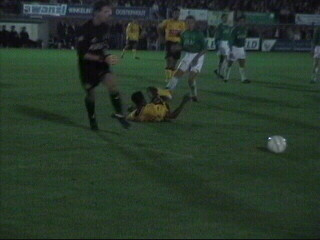
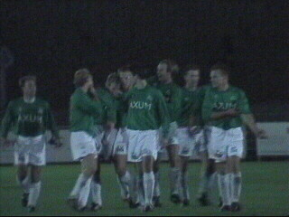
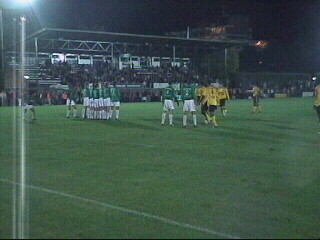

|
VV Baronie - Roda JC (1-0) 25 september 2003 |
Na veel omzwervingen vonden we de
"Blauwe Kei".

De eerste helft misten we vanwege files. In de
tweede helft zagen we nauwelijks meer. De nood-
verlichting van Boels was net voldoende om te
zien dat Addo onderuitgeschoffeld werd binnen
de 16! Helaas geen penalty....

Even later schoof de Baronie 1-0 binnen.
Roda speelde beroerd en zelfs de alom bejubelde
Arouna Kone deed zijn uiterste best om de nieuwe
Soetaers te worden.
Sonko kreeg wederom een halfuurtje speeltijd.

Roda was niet opgewassen tegen de amateurs
uit Breda. In de extra tijd was deze vrije trap de
laatste mogelijkheid op een verlenging. Helaas!
De Baronie won verdiend en vierde dit uitbundig.
Een heuse veldbestorming volgde.
Tijd om het verdriet te verdrinken, ook al is het
Oranjeboom bier.
Geen goals, toch gescoord!
Deze NACcers zijn vers terug uit Newcastle en
beloofden er in december bij te zijn in Z16!
Leuke mensen bij de Baronie; het verzachtte de
pijn...